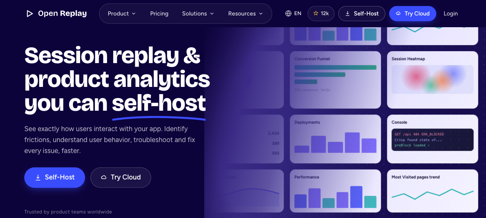
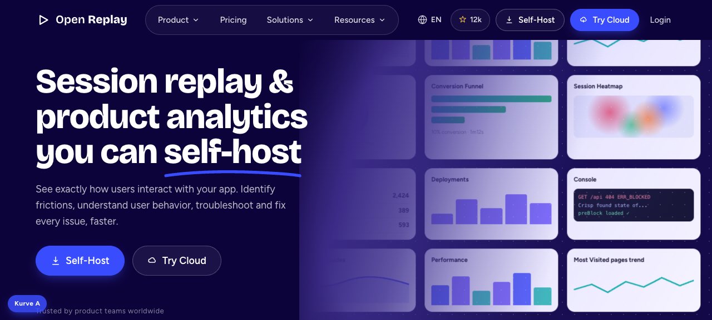
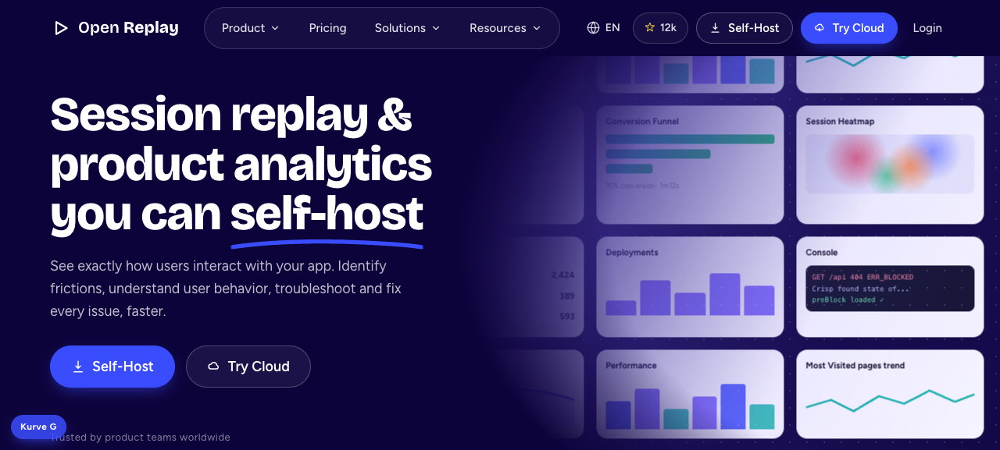
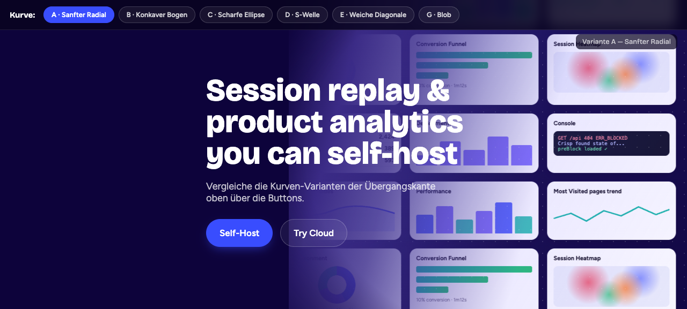
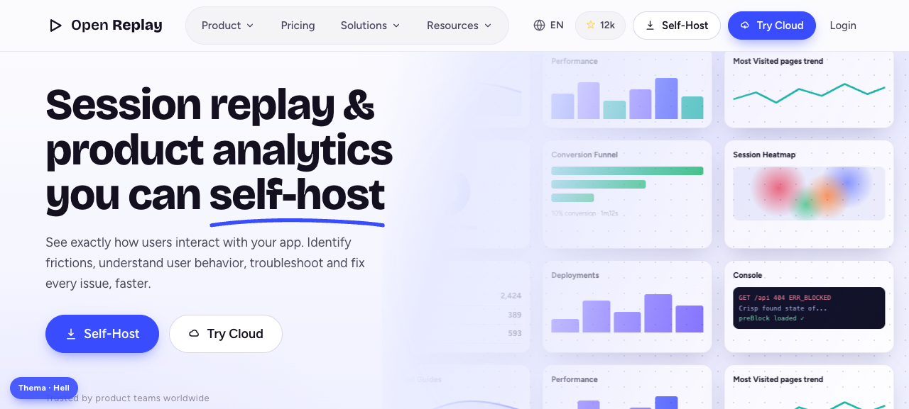
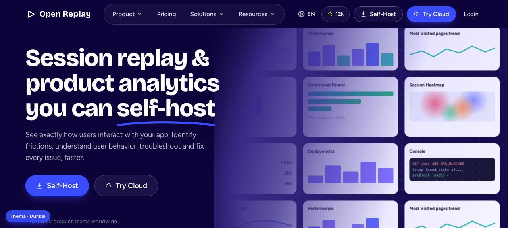
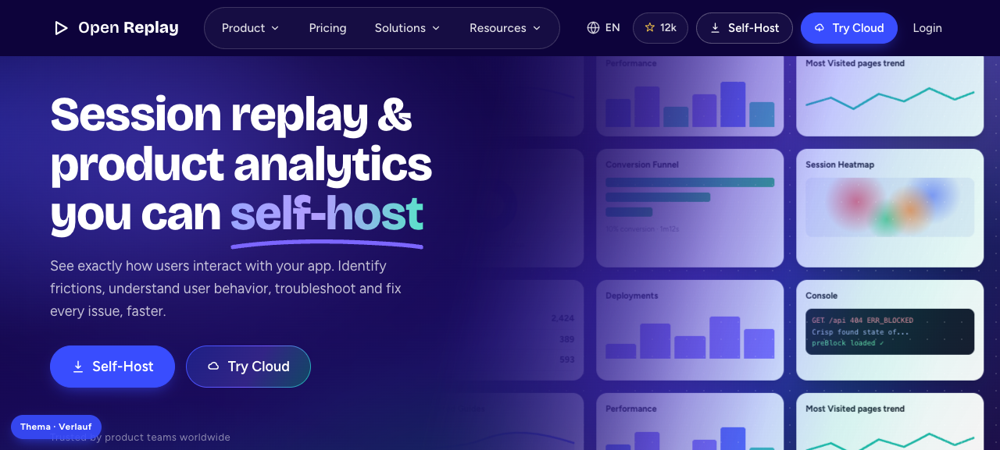
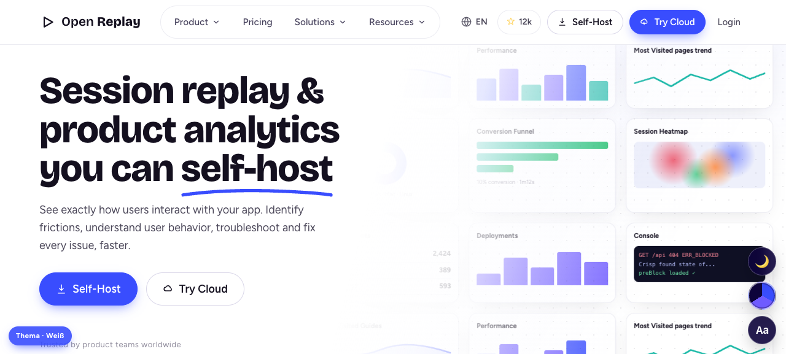
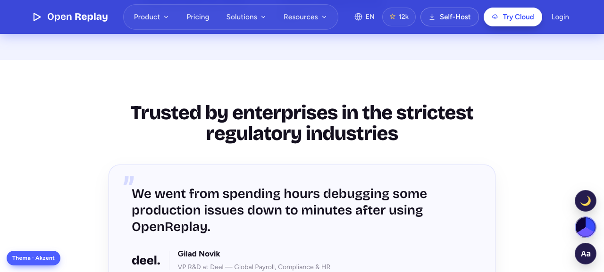

Originalgetreuer Nachbau von openreplay.com in Plain HTML, CSS & JavaScript — komplett ohne Frameworks. Plus Hero-Kurven, fünf Design-Themen, acht Farbschemata, Dark-Mode und ein Baukasten mit wiederverwendbaren Landing-Page-Bausteinen.

Hero mit driftender Dashboard-Montage (dem Signature-Effekt), drei Feature-Splits mit Pill-Tabs, Security-Band, Testimonial, Community, Blog und 5-Spalten-Footer — inkl. Mega-Menü, Mobile-Menü, Sticky-Header und Scroll-Reveals.
Homepage öffnen →
Der weiche Verlaufsschleier als sanft gefederter Radial — ausgewogen und weich. Die Default-Kurve der Homepage, isoliert als Studie.
Variante öffnen →
Dieselbe Montage, aber der Schleier als versetzter Radial-Blob — eine organische, asymmetrische Wölbung statt einer symmetrischen Kante.
Variante öffnen →
Schalte alle sechs Übergangskanten live durch: A Radial · B Bogen · C Ellipse · D S-Welle · E Diagonale · G Blob.
Switcher öffnen →
Die komplette Homepage in Hell: heller Hero, helle Bänder, dunkle Typo — das Electric-Blue bleibt der Anker.
Variante öffnen →
Die gesamte Seite in Indigo-Dunkel: Glas-Karten, helle Typo — nur die Produkt-Mockups bleiben bewusst hell.
Variante öffnen →
Deutlich mehr Verläufe im Hero: driftende Aurora-Schwaden, mehrfarbiger Schleier, Verlaufs-Headline und -Buttons.
Variante öffnen →
Sehr hell und weiß: reines Weiß statt Tönung, Haarlinien statt Flächen — maximal reduziert, die Markenfarbe nur als Hauch.
Variante öffnen →
Weiße Hintergründe, aber Hero und Header tragen die volle Markenfarbe — als leichte Tönung zieht sie sich durch Splits und Bänder.
Variante öffnen →